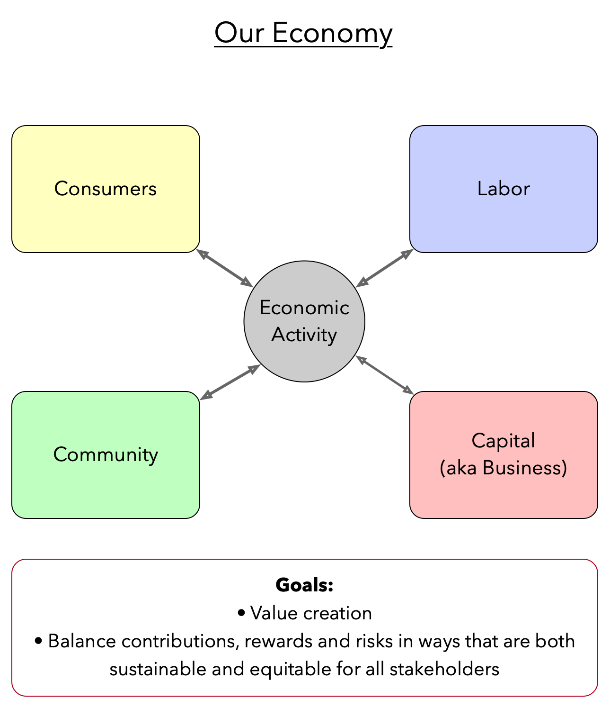

Thinking Differently About Our Economy
24 Apr 2021 · 14 min read
topics: sustainabilityvalue creation

We all know that the economy is important. We talk about it every day. But do we ever think about… how we think about it? How we visualize it? How we've been conditioned to think about it, perhaps unknowingly?
What I'm Proposing
Let me start with a pretty simple and straightforward picture of how I have come to see these things.
The Four Stakeholders
All significant economic activity involves exchanges between four different sets of stakeholders:
-
Consumers – Those who exchange small sums of money for goods and services.
-
Business (aka Capital) – Those who exchange large sums of money for the tools and buildings and land and labor needed to produce goods and services, in hopes of receiving some returns on their investments.
-
Labor – Those who exchange their time and effort for wages and benefits paid by business.
-
Community – The pool of environmental and societal resources that play an essential supporting role, consisting of natural resources, schools, roads, bridges, power grids, healthcare, child care, etc.
(Now, of course, any one of us, as an individual, can participate as more than one type of stakeholder. However our interests, contributions and rules of governance tend to vary by type, and so it's easiest to think of these as four distinct roles, for purposes of discussion and analysis.)
The Goals
The goals of economists, and of the policy makers through which their recommendations can be implemented, must be twofold:
- To add value to the overall system through economic activity;
- To balance exchanges in such a way that all four sets of stakeholders make contributions, receive rewards, and suffer risks, to degrees that are both sustainable and equitable.
The Big Picture
This all seems straightforward enough, doesn't it? Let me restate this in three parts:
- Consumers, businesses, workers and communities all have their parts to play.
- When we look at the contributions each component makes, the risks they assume, and the benefits they achieve, all four components need to be sustained so that they can remain viable contributors.
- When there are benefits achieved that exceed the levels needed for sustenance, these should be distributed among all four sets of stakeholders in an equitable manner.
So I've started with what seems to me a pretty simple and straightforward and meaningful lens through which we can view and measure and appraise our economic activity.
What We're Used To Hearing
But does this sound like anything you're used to hearing? I'm guessing not. So now let's look at our usual ways of thinking about our economy, and the problems these cause.
Transactions between Businesses and Consumers
Now one of the first things to notice is that our predominant economic thinking tends to focus first and foremost on the exchanges between businesses and consumers – which is not surprising because, in many ways, these are the easiest exchanges to think about.
After all, when we talk about a transaction, which we often think of as the atomic unit of economic activity, we are talking about an exchange between a business and a consumer that happens at a precise point in time, and involving precisely defined quantities and units of measure (e.g. this consumer purchased this number of widgets from this company on this date, for this amount of money). So transactions are easy to measure, and easy to summarize into totals, and can easily produce numbers that can be readily compared to one another.
Free Enterprise
And when we talk about free enterprise, or a free market economy, we are also talking about the exchanges between businesses and consumers, and stating that:
- Businesses should be free to produce whatever products and services they want, in whatever quantities they choose, and offer them to consumers at whatever prices they decide upon;
- Markets should offer consumers free choices between competing products and services offered by different businesses;
- Consumers should be free to purchase whatever products and services they decide to spend their money on.
And so, when we think about a free market economy whose exchanges can be precisely measured and analyzed over time, we naturally focus on the exchanges that happen between just two of these components: businesses and consumers.
What We're Missing
But if we stop there, or if we try to force the flows to and from the other components into the free market model, then we are relying on a false and incomplete picture of what is really going on.
Long-Term and Far-Reaching Effects
Another reason we are drawn to focus on exchanges between consumers and businesses is that their primary effects are very local and very short-term. When I buy something from a business, some amount of money almost immediately flows from one of my accounts to another account belonging to the business, and in return a product or service is delivered from the business' inventory to my residence. The exchange is nice and neat and well-bounded.
However, even in this sort of transaction, there can be longer-term effects that are not so easily accounted for. Let's suppose that the product fails in only a few months of use. Or, even if it continues to fulfill its primary purpose, suppose the product poses some danger to the consumer, or to other nearby consumers, and suppose – as is often the case – the consumer has no way to detect these problems through a simple visual inspection of the product immediately prior to, or immediately following, the purchase transaction.
This is why some product designs and formulations need to be tested and certified before offering them for use by the general public, and why we have lemon laws and warranties and other forms of consumer protection. And even though there is always a natural and ongoing balancing act, trying to provide adequate consumer protection, while still minimizing the costs of regulation and oversight, incidents such as the crashes and subsequent grounding of Boeing's 737 MAX provide painful reminders of the dangerous – and even catastrophic – longer-term effects that may occur when insufficient resources are devoted to meaningful oversight.
This issue of long-term and distant effects vs. short-term and local will come up again, and become even more central, as we move on to consider the other two stakeholders involved in all economic activity.
What about Labor?
Now let's talk about labor. We often make the mistake of seeing labor only through the same free market lens that we use for consumer transactions.
In other words, we say that employers must compete for workers on the labor market, and workers are free to choose whichever employer offers them the best work, with the best job satisfaction, the best working conditions, the best wages and the best benefits.
And then, when this model turns out not to work very well, we think that the only solution is for workers to join together in labor unions, so that they can gain the same sort of consolidated leverage that big employers enjoy.
And then, when employees turn down a major opportunity to unionize, we all go off to our separate corners, muttering under our breaths, and each repeating whatever mantra we've been taught to help explain this sort of decision.
But the fundamental problem is not in the details of any particular union, or unionization effort, but in the flawed lens through which we are seeing the problem: the whole idea of free labor markets as an entirely adequate means of representing the interests of workers.
The basic problem with seeing labor interests only through this lens is what I will call constraints on the value of labor.
-
Geographic constraints: If a company decides to move its operations to another country, or even to the other side of our country, then employees will often face several sorts of barriers if they want to follow their work to the new location where it's being performed.
-
Job Market constraints: As both Karl Marx and Bruce Bartlett have pointed out, capitalists have ways of ensuring that we never quite reach full employment levels, such that there is always a “reserve army of the unemployed” available to take the jobs from any workers who dare to ask too much of their employers.
-
Healthcare coverage constraints: if an employee is currently receiving benefits from their employer, especially for a serious threat to their health, then fear of losing critical coverage may constrain their ability to move to a new job.
-
Skills constraints: An employee who has gained training and experience in one sort of job may find themselves unable to gain employment when demand shifts to a new skill set for which they are ill-prepared.
-
Lifecycle constraints: a capitalist who finds his business on the rocks may decide to fold up shop at any time; but an employee out of work cannot do the same (unless we are suggesting self-immolation when they can no longer find gainful employment). The employee still has themselves to take care of, and may also have familial dependents to worry about.
What's more, most pay structures at most companies provide lower compensation for younger employees, such that costs to support a family, as well as sustain oneself through retirement, can only reasonably be funded if an employee's salary increases over time as they gain more experience; but employers are under no obligation to retain employees as their salaries grow, and are free to replace them at any time with younger, less experienced, and less expensive labor.
-
Automation constraints: A business may choose to automate some of the work they need done, replacing employees with machines; but employees, by definition, are only paid for the hours they work, and so are prevented from achieving any sorts of comparable benefits through automation.
-
Differentiation constraints: Any capitalist will tell you that one of their first goals is to achieve differentiation from their competitors in the marketplace, because once a product or service is reduced to a commodity, then suppliers can only compete on price, which then sends all producers of that commodity off on a race to the bottom, in terms of profit margins.
And yet all modern businesses – especially large ones – have implemented human relations policies with the specific intent of commoditizing their labor resources: that part of the business sometimes reductively referred to as human capital.
-
Scaling constraints: One goal of any modern business is to achieve economies of scale, as well as some degrees of both horizontal and vertical integration. Companies do this by organizing their employees into work teams, and departments, and through growth. And one of the benefits they can gain is the bargaining leverage they can achieve through their size.
Yet the typical employee has no ability to scale their own efforts, or to achieve any comparable sort of leverage when bargaining with their employers, except through unions. And while unions can provide some welcome leverage, they are often awkward and ungainly tools for achieving economies of scale or useful integration of any kind.
And so, when we look at all of the constraints that employees are forced to operate under, when compared to capitalists or consumers, one has to wonder whether it is at all adequate to use a free market model as the lens through which we view the contributions they make and the benefits they receive. And I think we are forced to conclude that, although the free enterprise system works fairly well as a model for exchange between businesses and consumers, it is entirely the wrong sort of tool to use when evaluating the role, and the fate, of labor.
So what are we implying here? Capitalists in particular typically respond to these sorts of concerns with suggestions that we are trying to overthrow the entire capitalist system and replace it wholesale with socialism. But this is simply not true. Free markets are useful tools, especially for exchanges between businesses and consumers, and capital is a necessary component of our economy. All I am trying to point out here is that free markets, by themselves, are not the best or only tool that we should use when evaluating the concerns of labor.
And What about Community?
And now we come to the fourth and final stakeholder in our economy: community. I am using this term to include both environmental and societal resources that are necessary to sustain our desired economic activity.
And here is where long-term and global effects, discussed above, become centrally important. We might once have thought that community considerations could reasonably be constrained to relatively short-term and local effects. But in the era of global warming, and pollution of our oceans, and the wholesale destruction of species, and deforestation, and desertification of our land, we are compelled to view community as global, including other species as well as our own, and to consider how such a community can be sustained in a way that it remains a viable vessel for human life and activity over a period of decades and centuries.
And, of course, these are just environmental resources we're talking about so far!
Just as importantly we have societal resources – schools, libraries, parks, museums, theaters, stadiums, roads, bridges, power grids, water delivery, trash and sewage removal, and so on – that must be sustained in order to provide a viable framework for human life and activity over the long term.
And so, if we found the transactional exchange of products and services through a free enterprise system to be inadequate when viewing the position of labor, it proves even less useful when considering how to sustain and nurture the necessary environmental and societal resources our economy needs in order to continue operation over the long haul.
Moving Forward
So where does all of this lead?
No one, I think, will dispute the contention that one job of economists is to help society measure the health of our economies.
It turns out, though, that economists and policymakers have been acting a bit like the drunkard searching for his lost keys beneath the streetlight: it's not so much that he's likely to find what he needs there, but more that it's so much easier to make observations within that circle of light.
In a similar way, when our economists focus so tightly on capitalists and consumers, and free markets, and transactions, and stock market prices, and GDP growth, and inflation, it is not so much because these are the only things that matter, but more because they have developed such handy tools for measuring and influencing these particular numbers.
And also – not incidentally – because economists have bought into the view of the world so often held by wealthy capitalists: namely, that what's best for them is also what's best for everyone else.
This is a wonderful story – especially for capitalists – but it turns out not to be true. When we focus just on capitalists and consumers, we do often get rising stock market prices and lots of affordable consumer goods – at least in the near term – but this view of the world gives short shrift to the concerns of labor, and altogether takes for granted needed supplies of environmental and societal resources.
So what we need – and what we must move towards – are economic measures, and corresponding levers, that allow us to pay equal attention to, and have equal influence over, the contributions, rewards and risks undertaken by labor and by community.
No one should feel that such a shift in focus is a threat to capitalism – and no one should allow themselves to be convinced by manipulative capitalists that giving equal consideration to the needs of labor and community will start us down a slippery slope towards socialism.
Here's the bottom line: all four sets of stakeholders deserve a seat at the table, and it should be the job of economists and policy-makers to make sure that all four receive shares of the rewards that are both sustainable and equitable.
Anything short of this will prove before long to be ruinous for society as a whole. And while we humans may take modern society for granted in the same way that fish take water, we would do well to pay attention to that sucking sound at the bottom of the tank before we all find ourselves high and dry.